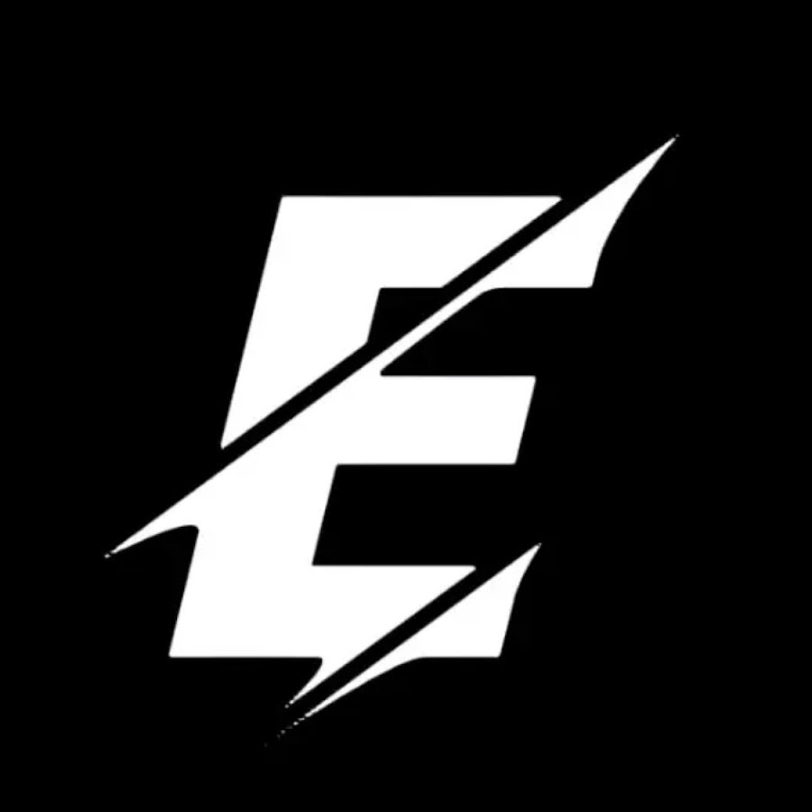
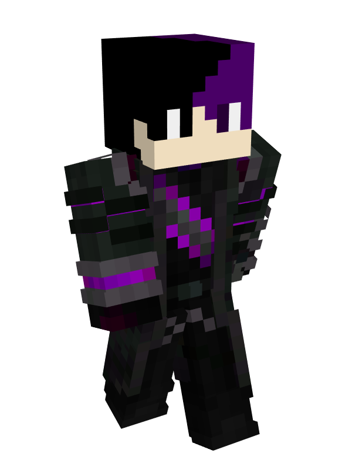
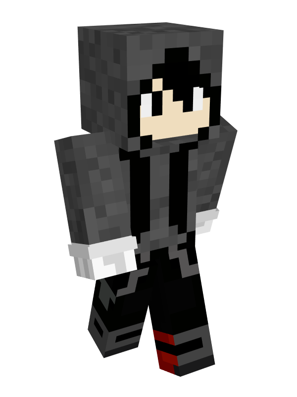
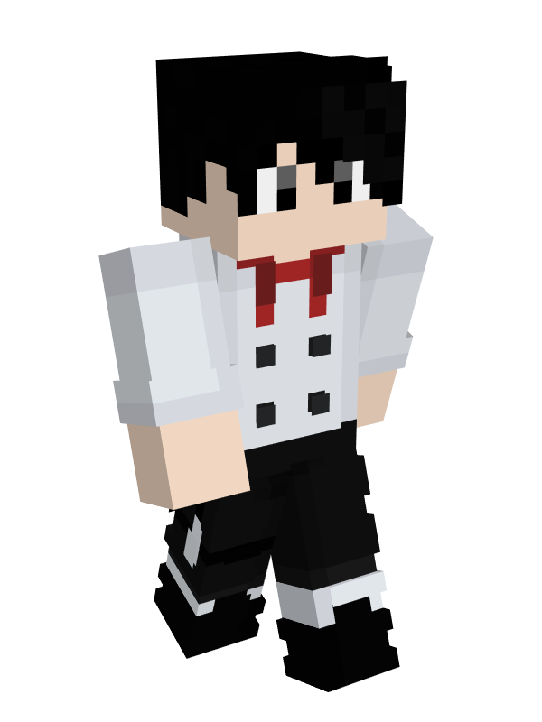

MINECRAFT · ROLEPLAY
WingsCraft
Participación en una experiencia de Minecraft con elementos de interpretación y roleplay.

EDUDIRECTOR CREATIVO · MINECRAFT
Soy configurador de servidores Minecraft, organizador de eventos y director de BlockVerse Studio. Me apasiona crear experiencias únicas para jugadores y creadores de contenido.
CONÓCEME
Soy un creador costarricense apasionado por los videojuegos desde que era niño. Actualmente estudio Gastronomía y también tengo experiencia trabajando como asistente electricista.
Mi pasión por los videojuegos me llevó a descubrir el mundo de Minecraft, donde encontré una forma de combinar creatividad, tecnología y narrativa.
Con más de cuatro años de experiencia en configuración de servidores, me he especializado en desarrollar experiencias para comunidades y creadores de contenido.
Soy director de BlockVerse Studio, donde colaboro con clientes y equipos para transformar ideas en proyectos de Minecraft.
También disfruto el roleplay y la interpretación de personajes, explorando diferentes historias, personalidades y emociones.
Cuido los elementos técnicos y creativos de cada proyecto.
Busco soluciones y sigo aprendiendo ante los desafíos.
Me gusta planificar y coordinar el trabajo de los equipos.
Disfruto desarrollar nuevas habilidades y conocimientos.
MI TRABAJO
Participación en una experiencia de Minecraft con elementos de interpretación y roleplay.
Participación como soporte en Lucky Walls 2, encargándome del servidor de Discord y Servidor para el evento.
Configuración de sistemas y mecánicas de cocina para el evento Zampon. Me encargué de preparar su funcionamiento técnico dentro de Minecraft.
Dirección y configuración de CynCraft en colaboración con la streamer ItzCynthia. Me encargué del montaje del servidor, configuración de mods, y organización del proyecto.
Dirección y configuración técnica de una experiencia Minecraft en colaboración con Biaggio. Me encargué del montaje del servidor, implementación de mods custom, y organización.
Dirección y configuración del proyecto en colaboración con Zeyblood. Responsable de preparar el servidor, configurar sus sistemas y coordinar el desarrollo técnico.
Director y responsable de la configuración completa de Villamiel. Me encargué del montaje del servidor, configuración de mods custom, organización del proyecto y preparación de sus eventos.
Dirección y configuración técnica de Astherion Network en colaboración con Bluholder. Participé en el montaje del servidor, configuración de mods y plugins, y coordinación con el cliente.
Dirección y configuración técnica del servidor en colaboración con el streamer Danitaxta. Responsable del montaje, configuración de mods y plugins, y coordinación del proyecto.
MI FACETA ARTÍSTICA
Además de mi trabajo en configuración y dirección de proyectos Minecraft, tengo experiencia interpretando personajes en experiencias de roleplay.
Disfruto dar vida a personajes mediante la voz, la improvisación y la interpretación de emociones. He representado personajes como Hechicero Oscuro, Eren Vahl y EduCheff.
Interpretación de diálogos, personalidades y emociones de diferentes personajes.
Adaptación a situaciones inesperadas y desarrollo de escenas en tiempo real.
Participación en historias y desarrollo de personajes dentro de Minecraft.
Experimentación con distintos tonos, estilos de interpretación y recursos vocales.
Mis personajes y experiencias de interpretación pueden conocerse en la siguiente sección.
🎭 Ver mis personajesINTERPRETACIÓN Y CREATIVIDAD
Además de configurar servidores Minecraft, disfruto interpretar personajes y participar en experiencias narrativas de roleplay.

Personaje de temática fantástica interpretado en WingsCraft, relacionado con la hechicería.

Uno de mis personajes de roleplay, parte de mi experiencia creativa e interpretación de personajes.

Personaje de roleplay relacionado con la cocina, combinando interpretación y gastronomía.
Estoy interesado en colaborar con estudios, streamers y creadores de contenido que busquen interpretación de personajes, improvisación o voces para experiencias de Minecraft.
Actualmente no dispongo de muestras de voz públicas. Puedo conversar sobre una prueba de interpretación adaptada al proyecto.
MI EXPERIENCIA PROFESIONAL
Cuento con más de cuatro años de experiencia configurando servidores de Minecraft. Mi trabajo combina conocimientos técnicos, dirección creativa y organización de proyectos para comunidades y creadores de contenido.
Montaje y configuración de servidores, plugins, mods, sistemas personalizados y mecánicas para diferentes modalidades.
Planificación de experiencias, coordinación con clientes, organización de equipos y supervisión del desarrollo del proyecto.
Configuración de entornos Minecraft, administración mediante Pterodactyl, soporte técnico y solución de problemas.
Preparación de mecánicas, minijuegos, sistemas de progresión y actividades para streamers y comunidades.
CONFIGURACIÓN TÉCNICA
He trabajado con plugins populares, herramientas de administración y sistemas personalizados para mejorar la jugabilidad de diferentes servidores.
DIRECCIÓN CREATIVA
Dirijo BlockVerse Studio, un estudio enfocado en desarrollar experiencias de Minecraft para creadores de contenido y comunidades.
Me encargo de transformar las ideas de los clientes en proyectos organizados, coordinando la planificación, configuración técnica y preparación de las experiencias.
MI ESTUDIO CREATIVO
Soy director de BlockVerse Studio, un estudio creativo enfocado en desarrollar experiencias de Minecraft para comunidades, streamers y creadores de contenido.
Descubre nuestros proyectos, servicios, colaboraciones y el trabajo detrás de cada experiencia.
🌐 Próximamente: web de BlockVerse StudioTRABAJEMOS JUNTOS
¿Necesitas un configurador para tu servidor Minecraft o alguien que te ayude a organizar una experiencia para tu comunidad? ¡Me encantaría conocer tu propuesta!
Disponible para colaboraciones y proyectos de Minecraft.